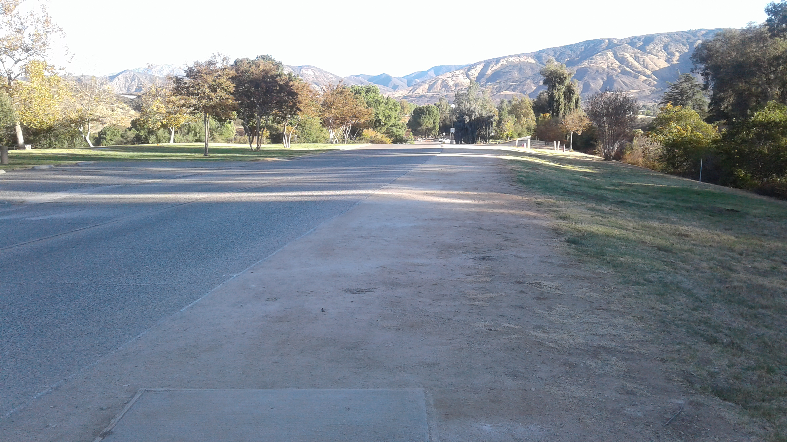
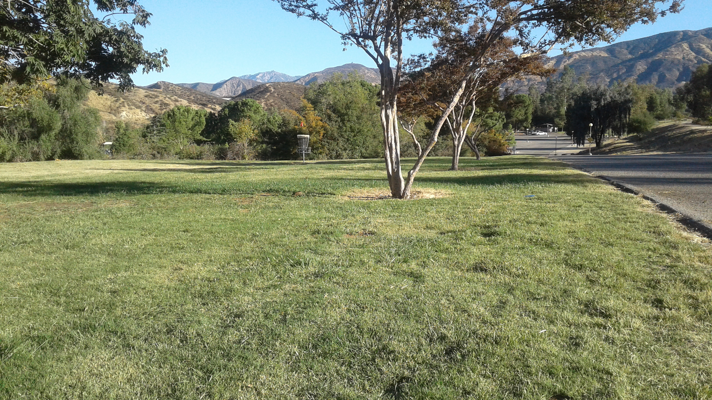
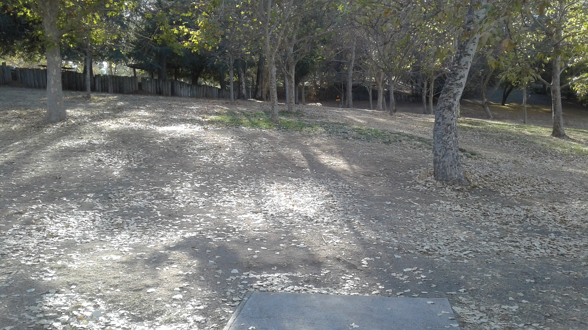
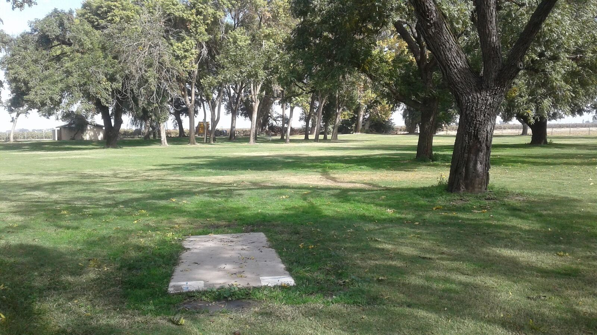
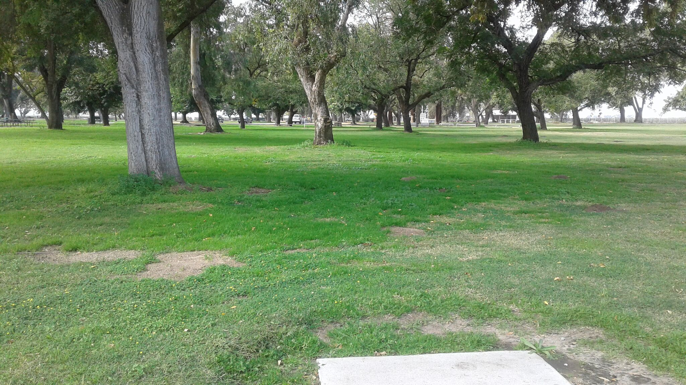
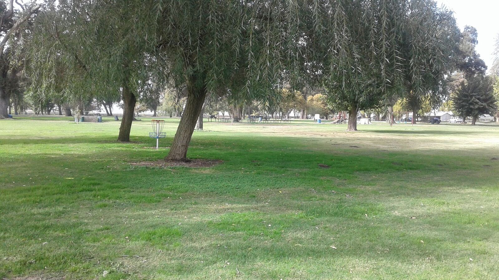

Where to Play
Since Disc Golf is a fast growing sport, more and more courses are being installed. The best place to find courses near you is at
Disc Golf Course Review where you can search courses based on your location. All of the courses listed on this site include reviews, photos, ratings and maps of the course. I would highly recommend printing out the course map before playing a new course because they can be hard to navigate.
Photos of a Disc Golf Road Trip to Palm Springs





